Its almost been 9 months, since my last update. In reality I was done with my 3d printer build by this January but couldnt find the time to write up an article. So this article will attempt to revisit the pain points I had come across while setting up the 3d printer since my last blog post update.
So this will be the 2nd in my 3 part series.
Section 1: Mechanical subsystem
This section was pretty straightforward. The only new aspects were the routing of the Core XY belt system, Tensioning of the Gantry, and the idea of heat set inserts. I got most of my parts printed in ABS with 50% infill. Looking back that was clearly overkill and naive on my part. I would rather have chosen a 20-30% infill.
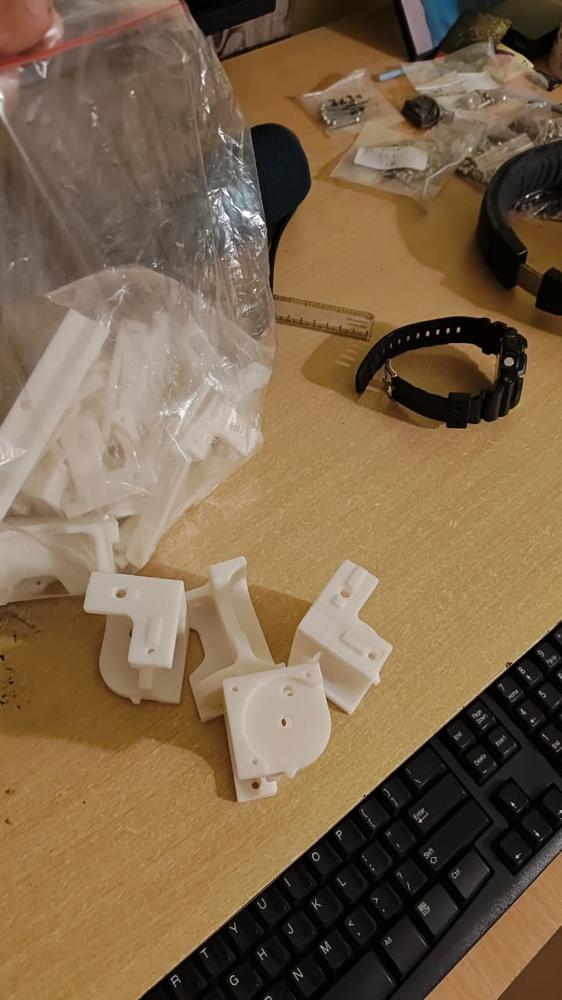
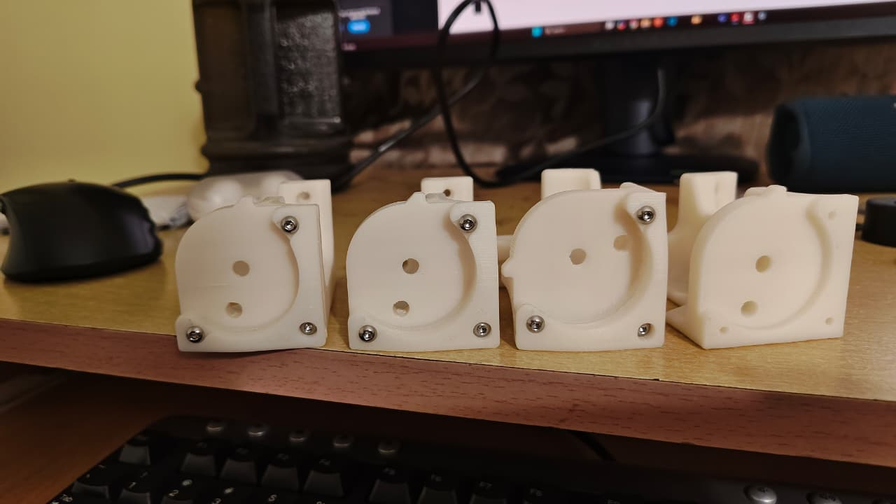
This was how the system looked after assembling the gantry. It was initially very tight, But after leaving it for some days the motion became smoother. I also later realized I hadnt deracked the Gantry properly or paid any attention to belt tension. This would come back to bite me.
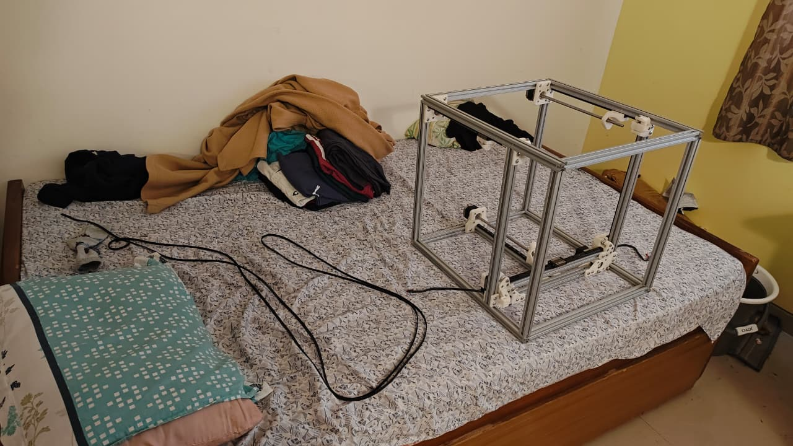
Here's a low resolution video of me testing the gantry movement. Feels a little tight here. And tbh the gantry was not perfectly perpendicular. I would later come to realize that I also had to lubricate the Linear rails. Not doing so would later cause shifts midway while printing. More on this in my 3rd post.
Another part to be a litte careful about is the bed plate assembly and setup. Here, you tighten the bed plate setup only after a few heating cycles. This is because you want to factor in the expansion of the aluminium that occurs during a heating cycle. This comes only after the wiring is done. For now we just tighten it enough to prevent it from falling out when inverting the printer.
One mistake I had done was fitting the electrical components underneath the printer before the acrylic sheet. This resulted in me having to take apart all the electronics I had fitted below to accomodate the sheet. Another pain point was cutting the acrylic sheet to size, as you can see there are more than a few messups as I got a little impatient with the process. You can see gaps here and there along with jagged edges at a few places on the periphery of the acrylic sheet.
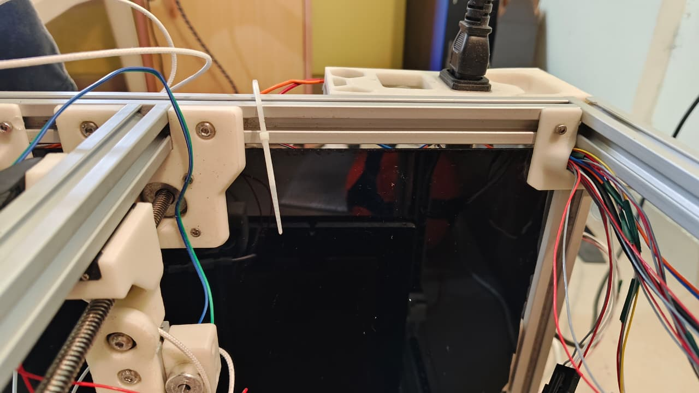
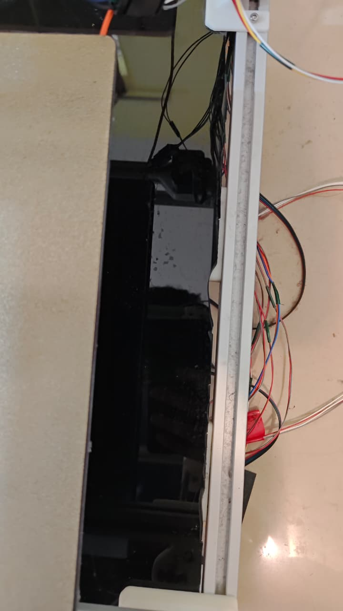
This was how I ended up trying to fix one of the messups(1 chunk accidently got chipped off, so stuck it back. Note: the wiring you see here was done later on):
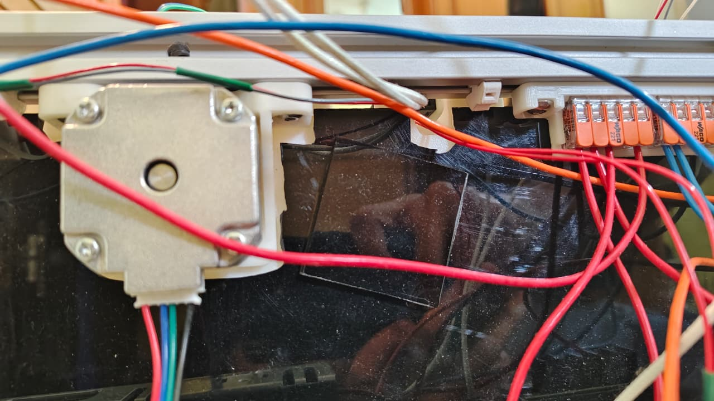
This was how my mechanical subsystem looked prior to wiring:
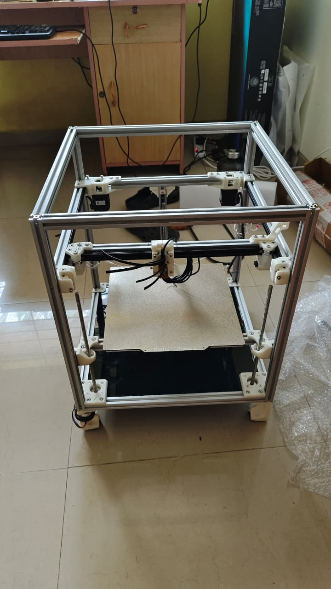
Section 2: Electrical Subsystem
Placing the controller boards, PSU, SSR, etc was not too hard.
Flashing the Controller Board:
I am using the Pro 1.1 Version. Hence had to make the jumper pin changes as provided in the table on the github page:
There is also a pdf guide for the controller board available here which mentions the MCU Power Jumper pin and the DFU pin in the same gitub repo. Here is a picture of the DFU pin(MCU pin can be found easily in documentation):
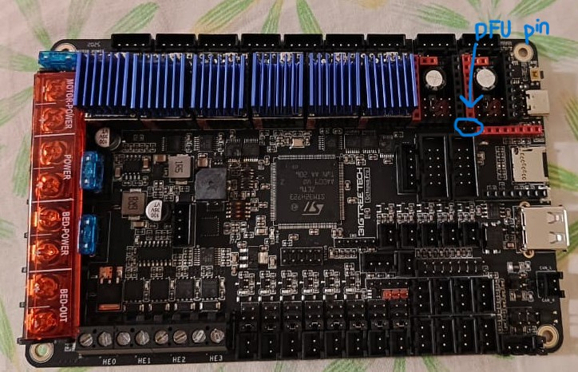
FLASHING:
To Flash the firmware, connect the MCU jumper as it makes powering the board for flashing very easy(Pg 18 in the manual). You must also connect the DFU pin as shown in the image before to put the board in flashing mode. Once the MCU and DFU jumpers are connected, just connect it to the raspberrryPi via the C port. It should power the controller board. I followed THIS guide for the right board configuration.
For Raspberry Pi OS Bookworm, the correct setup is:
✔️ Klipper
✔️ Moonraker
✔️ Mainsail
I used KIAH to install Klipper, Moonraker and Mainsail:
cd ~
git clone https://github.com/dw-0/kiauh.git
cd kiauh
./kiauh.sh
You will see options:
1) Install
2) Update
3) Uninstall
4) Advanced
Inside KIAUH:
Choose option 1 → Install
Then install in order:
1 → Klipper 2 → Moonraker 3 → Mainsail
This will automatically:
-> create Python 3 venv correctly
-> install system packages
-> create systemd services
-> set up Nginx for Mainsail
No manual Python/venv/systemd work needed.
Configure Klipper for the BTT Octopus Pro:
Once KIAUH installs Klipper…
Run KIAUH → 4) Advanced → Build Firmware
Within the makemenu config, I used the following settings:
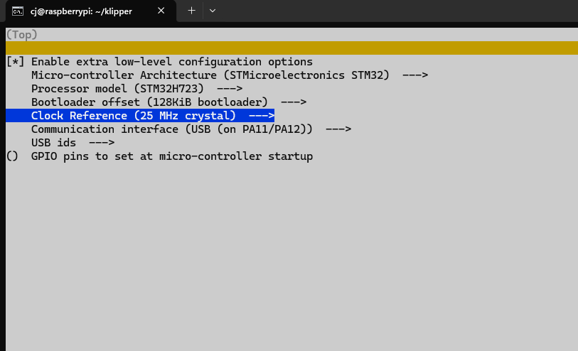
If you are manually installing without KIAUH, an issue I ran into was, installation being stuck at building wheel for uvloop.
uvloop often hangs while building wheels on Raspberry Pi OS Bookworm, especially on Pi 3B, because: The Pi 3B CPU is old (ARMv7) and slow Bookworm uses Python 3.11 which dropped prebuilt wheels for ARMv7 uvloop has to compile from source → takes a long time On Pi 3B it can appear “stuck” for 10–30 minutes So it is NOT actually frozen — it is compiling C extensions.
So a good idea is to wait for about 20-30 minutes. Alternatively, you can skip uvloop entirely. Moonraker does not require uvloop. If uvloop fails, Moonraker will fall back to asyncio and work perfectly.
You can disable uvloop by setting an environment flag:
-
Stop the installer (press Ctrl + C)
-
Install Moonraker WITHOUT uvloop:
export UVLOOP_NO_EXTENSIONS=1
./scripts/install-moonraker.sh
Moonraker will print:
Skipping uvloop build (extensions disabled)
And install cleanly.
Now to Flash, Type:
lsusb
If you see: ID 0483:df11 STMicroelectronics STM Device in DFU Mode
It means, board is alive and ready to flash
Then type:
make flash FLASH_DEVICE=0483:df11
The image shows how the output is supposed to look like:
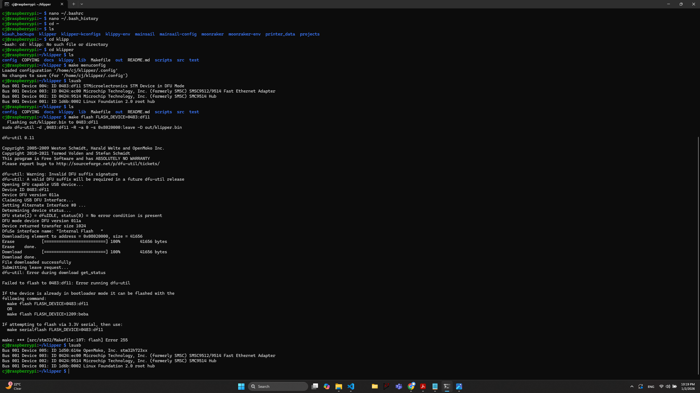
As you can see, it complains about some errors, but you dont have to worry, Flashing was successful. It complains because:
dfu-util sometimes reports a non-critical error even when flashing succeeded — especially on STM32H7 chips. Common reasons:
MCU reset happened too fast after flashing
dfu-util couldn’t reopen device before it rebooted
USB re-enumeration timing issue
So once you've flashed, you need to disconnect the board. Remove the DFU mode jumper and connect again. Type
lsusb
You should see something like:
1d50:614e OpenMoko, Inc. stm32h723xx
This means your flash was successful. This is the normal USB ID of Klipper firmware running on the MCU.
ls /dev/serial/by-id/
You will see something like:
usb-Klipper_stm32h723xx_XXXX-if00
Copy this and paste this path into your printer.cfg
Now you should be done with setting up klipper. To make sure just check if the klipper and moonraker services are running.
I was able to interface from my computer connected to the same wifi as my Pi at:
http://xx.xx.xx.xx:81/
Where xx.xx.xx.xx is your Pi's, ip address.
Now go wild with your printer.cfg file during Part testing.
Wiring:
The most cumbersome part for me was wiring. As far as my build was concerned, I needed to figure out how much length of wire I needed to source and what Gauge it should be. So I'm sure most of you know, but I'll just explain the wiring nevertheless. The AC power comes in and goes to the AC-DC 24V SMPS. This DC is then used to power the Controller board. In addition, the AC voltage is also routed to the bed heater via the Relay.
This was my calculation for the amount of wires required():
Mains wiring:
Switch to WAGO
WAGO to 24V PSU
24V PSU to SSR - end requires the hook thing -> this connects to bed from SSR
Wiring:(L = LIVE, N = Neutral)
Mains Wiring:(AWG 16 or larger)
Mains to WAGO L (AWG 14) (Live)
WAGO L to 24V PSU L (AWG 14) (Live)
WAGO L to SSR L (AWG 14) (Live)
WAGO L to 5V PSU L (AWG 14) (Live)
Mains N to WAGO N (AWG 14) (Neutral) (Neutral)
WAGO N to 24V PSU N (AWG 14) (Neutral) (Neutral)
(optional)WAGO N to Bed N(not necessary if already connected Bed N to 24V PSU N) (AWG 14) (Neutral)
WAGO N to 5V PSU N (AWG 14) (Neutral)
SSR Neutral to Bed Heater Live (Neutral)
Bed heater Neutral to PSU Neutral (Neutral)
Earth Wiring:
Mains E to WAGO E
WAGO E to 24V PSU E
WAGO E to SSR E
WAGO E to 5V PSU E
Ground the Bed - 50cm -> rounded -> 70cm
Ground the Frame - 20cm -> rounded -> 30cm
24V DC wiring:
24V N to 5V PSU N (AWG 20) (Neutral) -30cm -> connected both to wago neutral
24V N to 5V RPi (AWG 20) (Neutral) -30cm
24V N to 24V Controller Board N (AWG 18) (Neutral) -30cm
5V PSU L to 5V RPi L (AWG 20) (Live) -30cm
24V PSU L to 24V Controller Board L (AWG 18) (Live) -30cm
RPi: RPi USB to Controller Board USB ? (VERIFY)
Controller Board:
2 wires to Z end stop (AWG 24) -through cable chain Z -100cm
2 wires to Y end stop (AWG 24) -through cable chain X -115cm
2 wires to X end stop (AWG 24) -through cable chain X -115cm
2 wires to Part cooling fan 1 (AWG 24) -through cable chain Y -165cm
2 wires to Part cooling fan 2 (AWG 24) -through cable chain Y -165cm
2 wires for Hot end cooling fan (AWG 24) -through cable chain Y -165cm
2 wires for normal electronics cooling fan1 (AWG 24) -50cm
2 wires for normal electronics cooling fan2 (AWG 24) -50cm
2 wires for hot end thermistor (AWG 24) -through cable chain Y -165cm
2 wires for hot end heater (AWG 20) -through cable chain Y -165cm
3 wires for inductive probe (AWG 24) -through cable chain Y -165cm
4 wires for extruder motor (AWG 24) -through cable chain Y -165cm
Wire Requirement Summary:
AWG 24
Red Live -1040cm -safety factor x1.6 -> 2000cm(rounded off)
Blue(Gray) Neutral -1040cm -safety factor x1.6 -> 2000cm(rounded off)
Yellow Data -165 cm -safety factor x1.6 -> 300cm(rounded off)
White Data -165 cm -safety factor x1.6 -> 300cm(rounded off)
AWG 20
Red Live -225cm -safety factor x1.6 -> 400cm(rounded off)
Blue Neutral -225cm -safety factor x1.6 -> 400cm(rounded off)
Yellow Data - 0 cm
AWG 18
Red Live -30cm -> 60cm
Blue Neutral -60cm -> 60cm
Orange Earth
AWG 14/16(make a decision, needs to fit in JST connector)
Brown Live -120cm -safety factor -> 200cm
Blue Neutral -90cm -safety factor -> 200cm
Earth Green/Yellow -70cm -safety factor -> 100cm
Living in Bengaluru, I sourced most of this from SP road along with the fasteners. Later I switched to Onlyscrews for the fasteners.
The most painful part of this was crimping and soldering the wires.
Before wiring do refer to the wiring guide of your controller. I was using the octopus Pro v1.1 and hence referred THIS
This is how my wiring looked in the end.
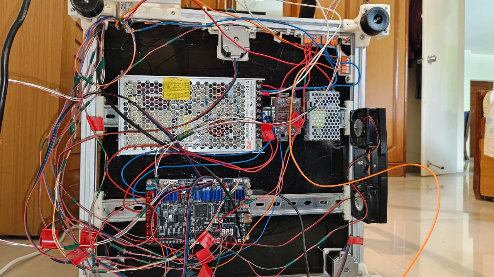
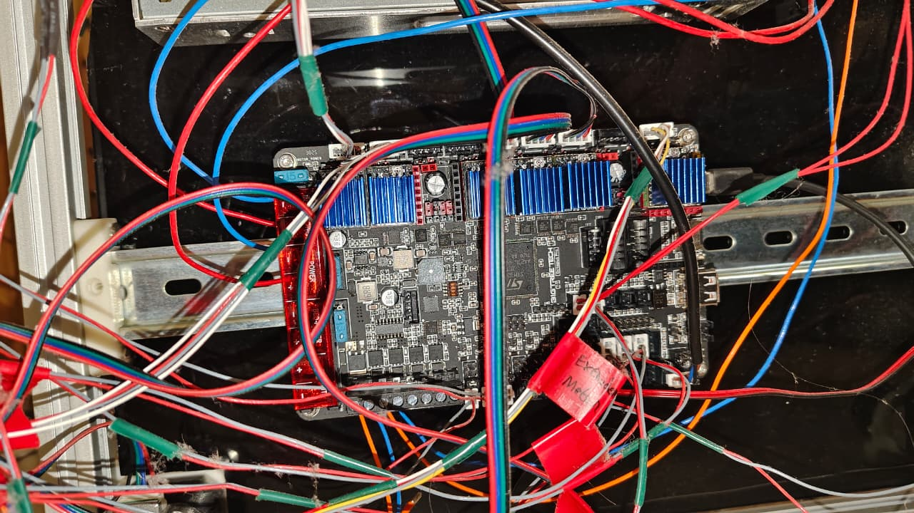
I had labelled the wires after routing them through the cable chains to easily connect to the appropriate port on the controller board. Also I couldn't find any online sources pinning down the number of links I needed to use in my cable cahins, so here is the number(excluding terminal connectors).
Z - 19
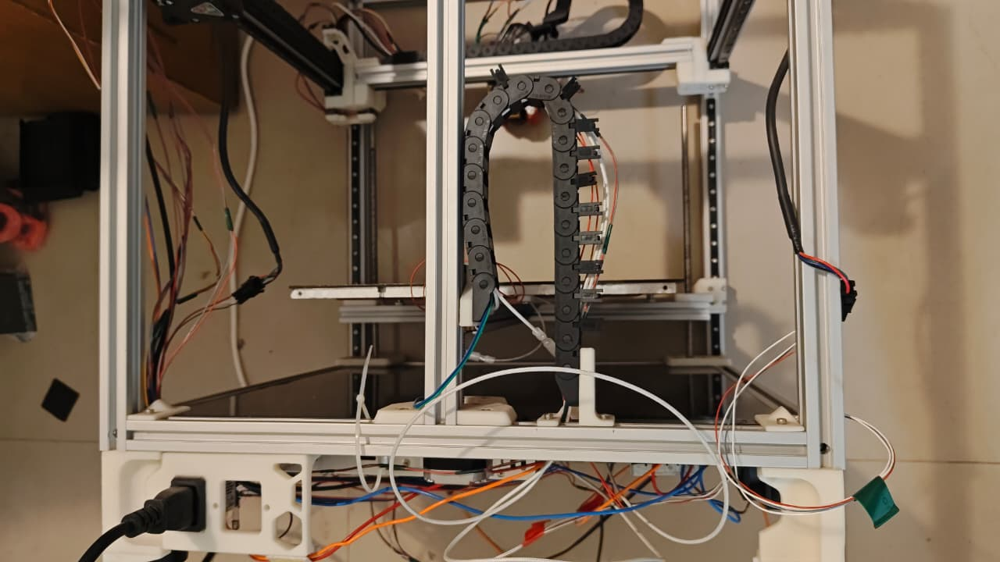
Y -
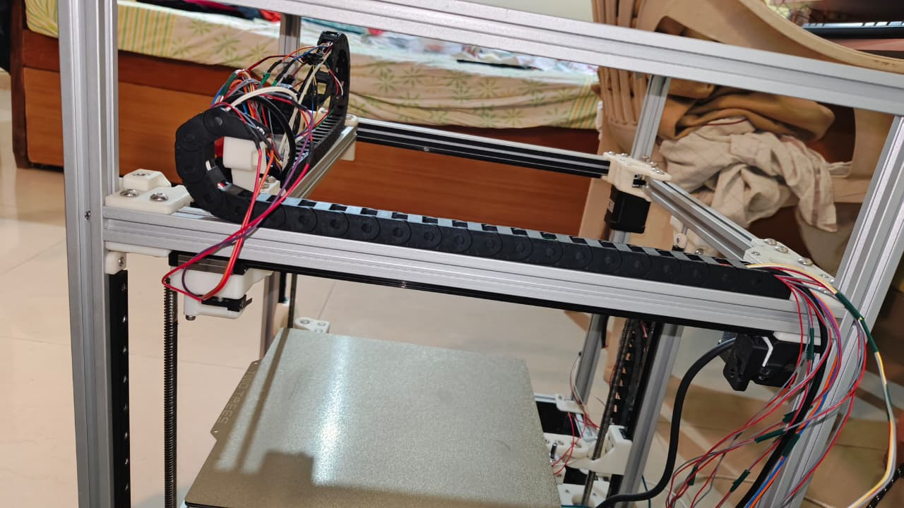
X - 25
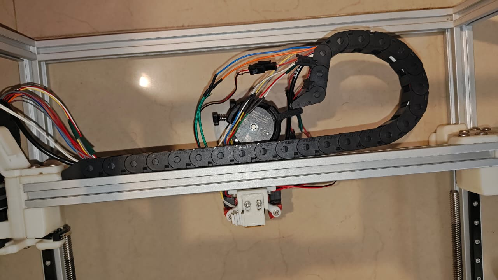
I performed unit tests of the fans and the motor systems(X and Y, not Z motors) prior to connecting the bed heater and the hot-end heater to ensure that the flashed firmware was working and my klipper setup was in working condition. HERE INSERT LINK TO GITHUB OVER HERE is a link to my initial klipper config file I was using for performing unit tests. Modify the Pins used and any other changes based on your test and board requirements
I was using the Omron Inductive Probe as my endstop. This VIDEO really helped me set it up. He talks about the common setups and how to configure them.
CAUTION: While using the Inductive probe, ensure that it detects your bedplate before relying on it to halt the movement along z axis. Otherwise your nozzle might crash into the bed plate. While testing, I realized it doesn't detect the plate near the borders. I'm not sure why, do comment if you happen to know.
Final part of this was the soldering of the fuse. As you can see, its not the best idea, but kinda got the job done.
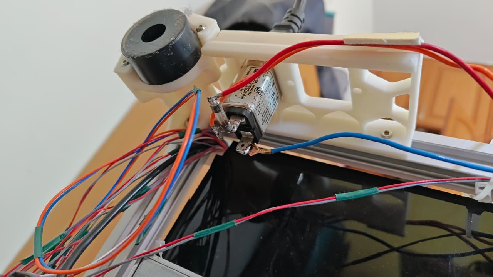
Here is a video of the 1st print I attempted before any kind of tuning, Didnt come out too bad. Only later would I realize that tuning was the real nightmare with various issues like Layer Shifting, Bed plate adhesion, etc.